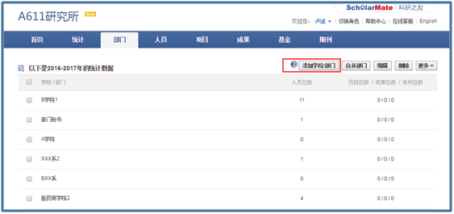
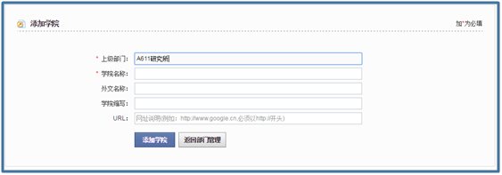
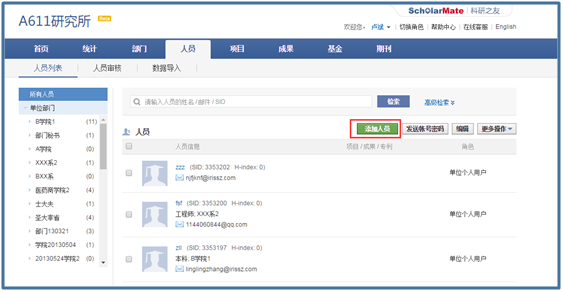
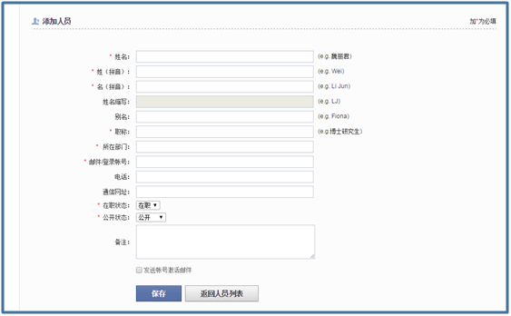
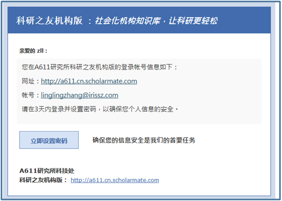
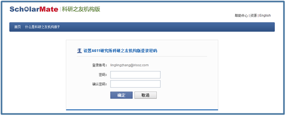

初始化部门及人员信息


开通科研之友机构版后，单位管理员需第一时间初始化单位的组织架构和科研人员账号。
1、完善单位组织架构
登录系统后，单位管理员可选择【部门】菜单完善单位组织架构。点击【添加学院部门】可增加二级单位。


2、增加单位人员账号
登录系统后，单位管理员可选择【人员】菜单添加单位下的科研人员，建议第一次进入【数据导入】子菜单实行初始化。
方式一：逐个增加科研人员


添加完科研人员后，点击【发送账号密码】通知具体的科研人员，科研人员在收到的邮件中设置个人登录密码。


方式二：数据导入方式

1）下载模板：可为具体某些二级部门初始科研人员账号，也可为单位整体初始科研人员账号。
2）打开下载的模板，补充账号信息后，上传模板，点击【导入人员】。
3）勾选【发送账号激活邮件】，点击【确定】。

3、科研人员在设置完个人账号的密码之后，即可登录自己单位的科研之友机构版。
版权申明：本文系“科研之友”公号原创的文章，如需转载请发信至邮箱：operations@scholarmate.com，如有未经授权转载，后果自负。
科研之友微信号：keyanzhiyou
投稿、意见，请直接回复或发信至：operations@scholarmate.com
分享与发现论文、专利、项目，提高科研影响力。

长按可识别图中二维码，关注科研之友微信公众号。